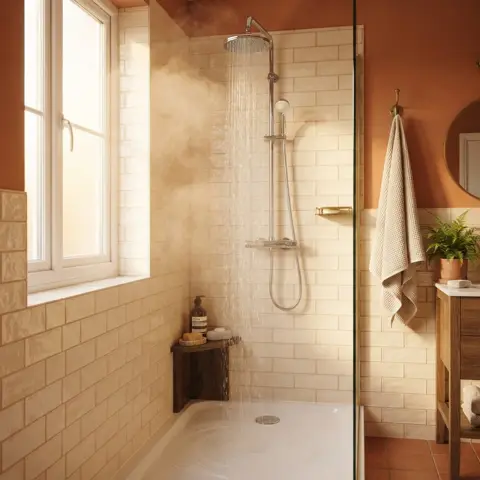
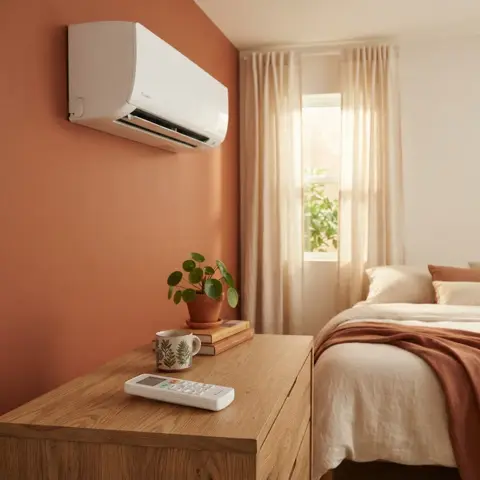
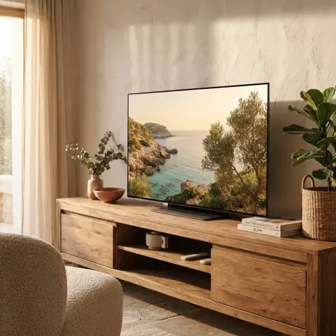
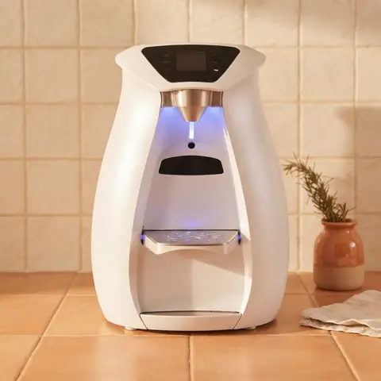
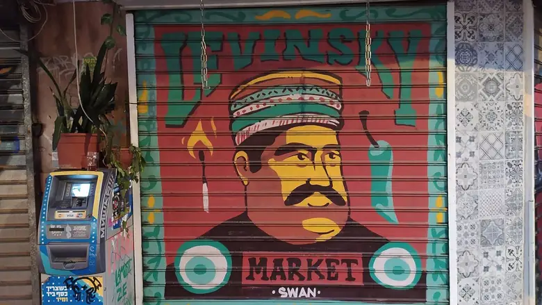
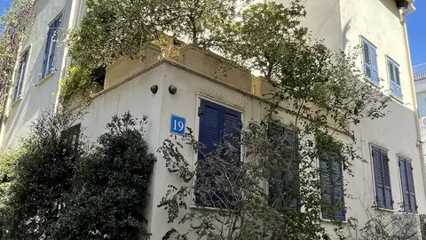

1Arrive
Your first hour
Four things every guest asks about on day one.

Hot water
Evening? Switch the boiler on 30–40 min before.

Air con
Two remotes. ON, TEMP, MODE.

TV
Already signed in.

Water bar
Hold red for hot.
2Settle in
Coffee and a first walk
Start five minutes from the door, in Levinsky Market.

Levinsky Market · 5 min
Spice shops run by the same families for generations, dried fruit, olives, Balkan burekas and tiny cafés.
Café Levinsky 41 3 minTony & Esther 3 minGarger HaZahav 5 min
3Explore
The day
Everything within a 20-minute walk.

Neve Tzedek
10 min walk
Old Jaffa
15 min walk
Carmel Market
15 min walk
The beaches
20 min walk
4Evening

Dinner, then Florentin by night
Locals go out after 22:00: street art, bars and cafés.
Koko Neko
Tonkotsu ramen. 7 min
Lava
Pasta on the park. 10 min
5Leave
Check-out by 12:00
- ✓Switch off the AC and the lights.
- ✓Pull the door shut behind you. It locks itself.
- ✓Send me a message so I know the room is free.
- ✓Airport: Gett taxi (about 25 min) or the train from HaHagana station.